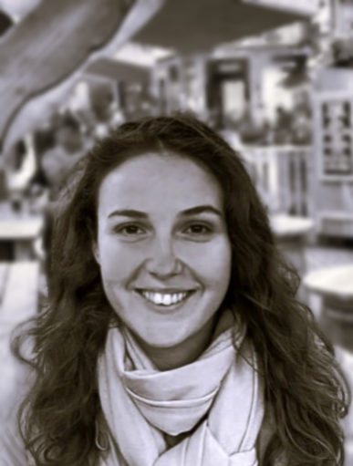
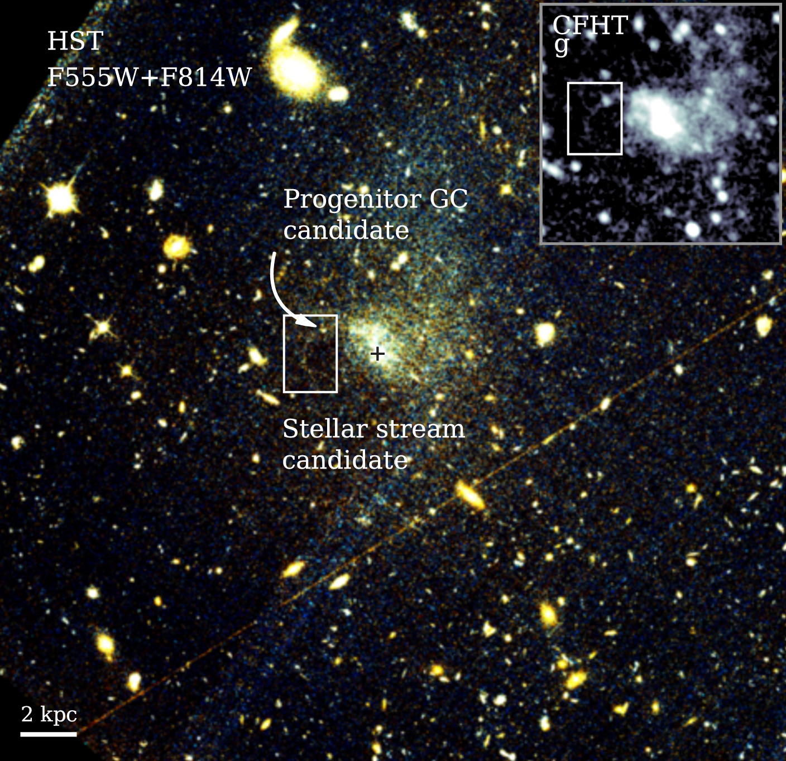
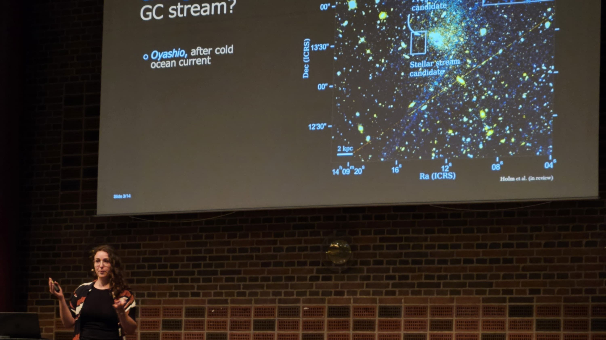

Julie Kiel Holm
Hi there! I'm a PhD student at the Niels Bohr Institute, University of Copenhagen. As a part of the Extragalactic Stellar Streams group, lead by Dr Sarah Pearson , I work on stellar streams, particularly those of globular cluster origin. They are the fascinating result of gravitational interplay between large groups of stars and the galaxy they orbit, and we can (potentially) use them to help untangle the nature of dark matter.
I'm also passionately sharing my excitement and knowledge with whoever wants to listen.
If you want to know more about either of those endeavours, look around this page or send me an email!
Publications
-

Evidence for the First Globular Cluster Stream Beyond the Milky Way[This paper has been accepted for publication, but is not out yet. Stay tuned] Stellar streams from globular clusters are faint, and we have only found them in the Milky Way - until now. In this work, we present evidence for the first globular cluster stream in another galaxy, and through generative modelling, we use it to constrain the properties of the dark matter halo of the ultra-diffuse host galaxy.

Astrobites
About once a month, I write a summary of a recent astrophysics paper for Astrobites. These are my most recent ones!
You can see the full list here.
Public Outreach Presentaions
Examples of presentations I've given to people who aren't astrophysicists:
- "Astro: Stjernestrømme" - International Day of Girls and Women in Science, Niels Bohr Institute, Febuary 2026
- "Fremmede stjerner i Mælkevejen" - Marathonforedrag, Brorfelde Astronomiske Vendekreds, December 2025
Sciencific talks
Here's a list of some talks I've given at conferences and workshops:
- Annual Danish Astronomy Meeting, Odense, May 2026 (see image above)
- Euclid: Wilky Way and Resolved Stellar Populations Workshop, Leiden, December 2025
- International Astronomical Union (IAU) Symposium 403, Cordoba, October 2025
Contact
Email: julie.holm at nbi.ku.dk